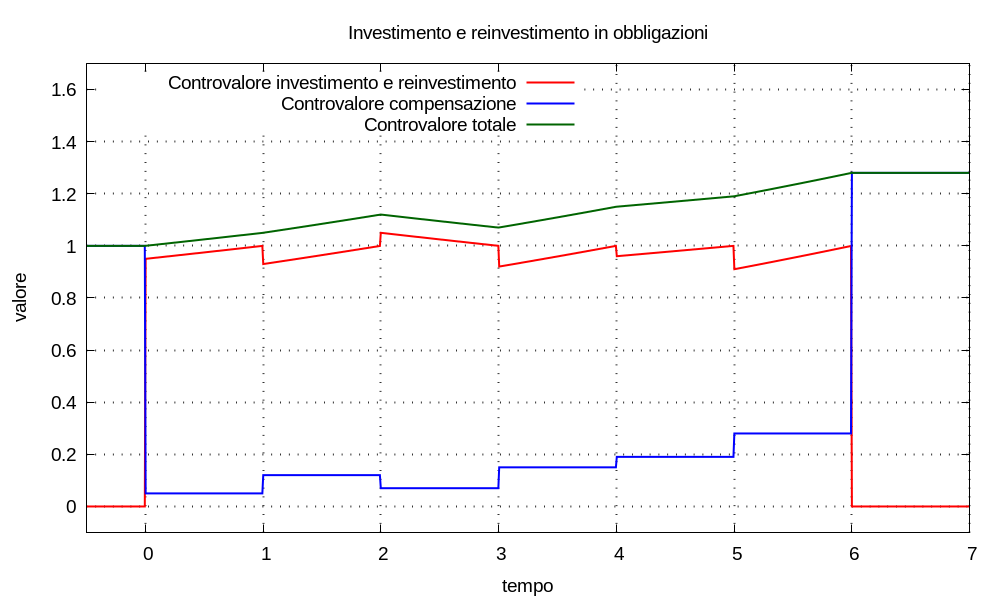

I titoli obbligazionari emessi dal Ministero dell’Economia e delle Finanze della Repubblica Italiana sono formalmente denominati Buoni del Tesoro; quelli accessibili agl’investitori non istituzionali hanno, normalmente, un valore nominale pari a 1000,00 eur: significa che s’acquistano a qualche prezzo, spesso risultato d’un’asta, e alla fine del loro corso il valore di rimborso è 1000,00 eur. Riassumiamo questa situazione affermando che la granularità del valore nominale è 1000,00 eur.
Altre emissioni obbligazionarie possono avere granularità diversa; per esempio: spesso le obbligazioni bancarie hanno granularità 10000,00 eur.
Decidiamo d’adottare il valore nominale come riferimento per l’espressione dell’entità dei capitali in per unità; per esempio: se Crif = 1000 un capitale d’entità Cproprio = 4567,89 eur s’esprime in per unità:
C = Cproprio ÷ Crif = 4567,89 ÷ 1000 = 4,56789
e il valore nominale stesso Cnominale = 1000,00 eur in per unità risulta:
C = Cnominale ÷ Crif = 1000 ÷ 1000 = 1
Concentriamoci sui prezzi d’acquisto e rimborso, tralasciando le eventuali cedole e altri movimenti come commissioni e tasse. Immaginiamo d’acquistare un’obbligazione al prezzo C0; il valore di rimborso al termine del corso del titolo sarà C1 = 1; in generale risulta C0 ≠ C1. Costruiamo la movimentazione:
M(t) = C0 δ(t - t0) - C1 δ(t - t1) = C0 δ(t - t0) - δ(t - t1)
usando un multimetro per simulare la dinamica finanziaria dell’obbligazione: il controvalore corrispondente risulta:
U(t) = C0 u(t - t0) esp[λ (t - t0)] - C1 u(t - t1) esp[λ (t - t1)]
⇒ U(t) = C0 u(t - t0) esp[λ (t - t0)] - u(t - t1) esp[λ (t - t1)]
se conosciamo l’entità dei capitali C0 e C1 = 1 possiamo calcolare la remunerazione corrispondente:
λ = (log C1 - log C0) ÷ (t1 - t0) = (log 1 - log C0) ÷ (t1 - t0) = - log C0 ÷ (t1 - t0)
e quindi il rendimento effettivo η = espm1(λ).
Descriviamo ciò che non è possibile fare. Immaginiamo che al termine del corso dell’obbligazione sia sul mercato una nuova obbligazione con lo stesso valore nominale, acquistabile al prezzo Cnuovo. In generale risulta C0 ≠ C1 ≠ Cnuovo, perciò non è possibile usare il capitale di rimborso C1 per acquistare un titolo al prezzo Cnuovo: o ci avanzano dei soldi o dobbiamo aggiungere dei soldi.
Esempi Se Cnuovo = 1,2: dobbiamo aggiungere 0,2 al capitale di rimborso C1 = 1 per acquistare un nuovo titolo. Se invece Cnuovo = 0,96: ci avanzano 0,4 dopo aver impiegato il capitale di rimborso C1 = 1 per acquistare un nuovo titolo.
In entrambi i casi: occorre avere un deposito di capitale a parte in cui versare l’avanzo oppure da cui prelevare l’aggiunta; spesso questo tipo di deposito è un conto corrente bancario, di questi tempi a remunerazione nulla (modellizzabile con un multimetro inerte), quindi l’investitore soffre la presenza di drenaggio causa giacenza, per quanto piccolo. Nel seguito denominiamo tale conto deposito di compensazione.
Osservazione Per farci un’idea: supponiamo che, invece, sia possibile usare il capitale C1 per acquistare una nuova obbligazione, perché C1 = Cnuovo. Allora la movimentazione del reinvestimento risulterebbe:
Mnuovo(t) = C1 δ(t - t1) - C1 δ(t - t2) = δ(t - t1) - δ(t - t2)e il corrispondente controvalore simulato dal multimetro:
Unuovo(t) = C1 u(t - t1) esp[λ (t - t1)] - C1 u(t - t2) esp[λ (t - t2)]⇒ Unuovo(t) = u(t - t1) esp[λ (t - t1)] - u(t - t2) esp[λ (t - t2)]Ricordando l’espressione della movimentazione del primo investimento risulta:
Mtotale(t) = M(t) + Mnuovo(t) = C0 δ(t - t0) - δ(t - t2)e ricordando l’espressione del controvalore del primo investimento risulta:
Utotale(t) = U(t) + Unuovo(t) = C0 u(t - t0) esp[λ (t - t0)] - u(t - t2) esp[λ (t - t2)]cioè, trascurando commissioni e tasse: è come se il rimborso e il reinvestimento non fossero accaduti.
Come modellizziamo un reinvestimento con nuovo prezzo d’acquisto diverso dal vecchio prezzo di rimborso? Continuiamo a tralasciare cedole, commissioni e tasse. Modellizziamo l’investimento e i reinvestimenti con un multimetro: l’investimento è rappresentato da capitale versato sul multimetro, cioè maggiore di zero; il rimborso è rappresentato da capitale prelevato dal multimetro, cioè minore di zero. La movimentazione che rappresenta il primo acquisto e rimborso si scrive:
C0 δ(t - t0) - 1 × δ(t - t1)
il secondo acquisto e rimborso:
C1 δ(t - t1) - 1 × δ(t - t2)
sommando:
C0 δ(t - t0) + (C1 - 1) δ(t - t1) - δ(t - t2)
(1 - C1) δ(t - t1)
(1 - C1) δ(t - t1)
Siccome dobbiamo definire un deposito di compensazione: usiamolo anche come origine del capitale C0 d’investimento iniziale e destinazione del rimborso finale; a tale scopo immaginiamo che il deposito abbia giacenza iniziale pari a 1 dal passato remoto. In pratica il deposito di compensazione è inserito a ponte sull’investimento rappresentato dalla sequenze di reinvestimenti in obbligazioni.
entrate deposito = uscite investimento
------------------------------
| |
v |
------------------------ -------------------------------
| deposito compensazione | | investimento e reinvestimenti |
------------------------ -------------------------------
| ^
| |
| |
------------------------------
uscite deposito = entrate investimento
Supponiamo d’eseguire un numero di reinvestimenti indicizzato dall’indice k ∈ [1, (K-1)] ∩ ℕ; la movimentazione di acquisti e rimborsi si scrive:
M(t) = C0 δ(t - t0) + Σk=1→(K-1) (Ck - 1) δ(t - tk) - 1 × δ(t - tK)
e la movimentazione del corrispondente deposito di compensazione:
Mcompenso(t) = 1 - C0 δ(t - t0) + Σk=1→(K-1) (1 - Ck) δ(t - tk) + 1 × δ(t - tK)
Per semplicità: supponiamo che ogni intervallo [tk-1, tk) d’investimento abbia corso di durata pari a tk - tk-1 = 1 e simuliamo l’investimento configurando il multimetro con la remunerazione:
λk-1 = [log(1) - log(Ck-1)] ÷ (tk - tk-1) = - log(Ck-1)
il controvalore dell’investimento e reinvestimento risulta:
U(t) = Σk=1→K { Ck-1 u(t - tk-1) esp[λk-1 (t - tk-1)] - u(t - tk) esp[λk-1 (t - tk)] } =
= { C0 u(t - t0) esp[λ0 (t - t0)] - u(t - t1) esp[λ0 (t - t1)] } +
+ { C1 u(t - t1) esp[λ1 (t - t1)] - u(t - t2) esp[λ1 (t - t2)] } + ...
Simuliamo il controvalore del deposito di compensazione con un multimetro inerte:
Ucompenso(t) = 1 - C0 u(t - t0) + Σk=1→(K-1) (1 - Ck) u(t - tk) + u(t - tK)
Osservazione Se vogliamo, osservato che si può scrivere:
1 = 1 - u(t - t0) + u(t - t0)risulta:
Ucompenso(t) = [1 - u(t - t0)] + (1 - C0) u(t - t0) +
+ Σk=1→(K-1) (1 - Ck) u(t - tk) + u(t - tK)
⇒ Ucompenso(t) = [1 - u(t - t0) + u(t - tK)] + Σk=0→(K-1) (1 - Ck) u(t - tk)
Posto:
Utotale(t) = U(t) + Ucompenso(t)
possiamo calcolare la remunerazione totale con:
λtotale = { log[Utotale(tK)] - log[Utotale(t0)] } ÷ (tK - t0)
e quindi il rendimento effettivo totale ηtotale = espm1(λtotale).
Esempio Immaginiamo una tupla di movimenti d’acquisto e rimborso che useremo per costruire la movimentazione dell’investimento e reinvestimento:
{ (0; +0,95), (1; -1), (1; +0,93), (2; -1), (2; +1,05), (3; -1), (3; +0,92), (4; -1), (4; +0,96), (5; -1), (5; +0,91), (6; -1) }l’investimento inizia in t0 = 0; poi ci sono cinque rimborsi e reinvestimenti che iniziano in t1 = 1, …, t5 = 5; infine c’è il rimborso finale in t6 = 6.
La movimentazione del deposito di compensazione è rappresentata da una tupla che contiene coppie analoghe con capitali d’entità opposta.
I rendimenti effettivi d’ogni investimento e reinvestimento risultano:
η0 = +5,2632% η1 = +7,5269% η2 = -4,7619%η3 = +8,6957% η4 = +4,1667% η5 = +9,8901%e il rendimento effettivo totale risulta ηtotale = +4,2001%.

Osserviamo sul grafico che la giacenza sul deposito di compensazione arriva mai all’entità necessaria ad acquistare un’obbligazione in piú; questa è una circostanza comune per gl’investitori che sono piccoli risparmiatori e rende inevitabile il drenaggio causa giacenza.